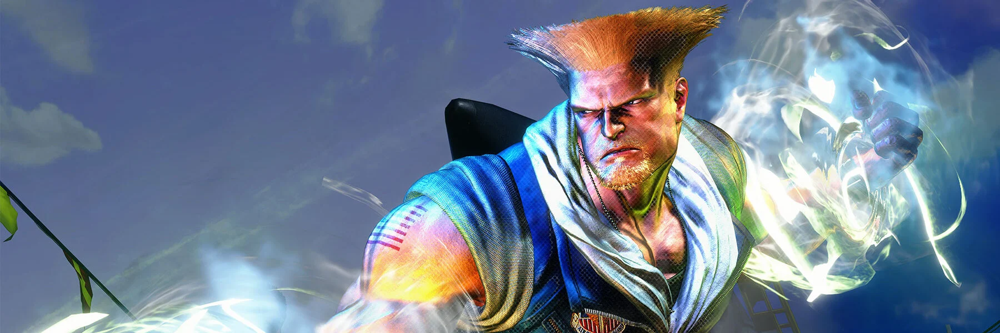
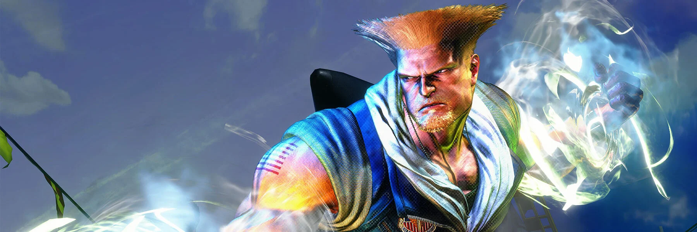
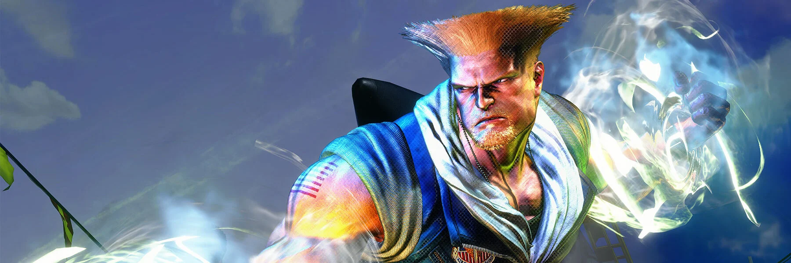
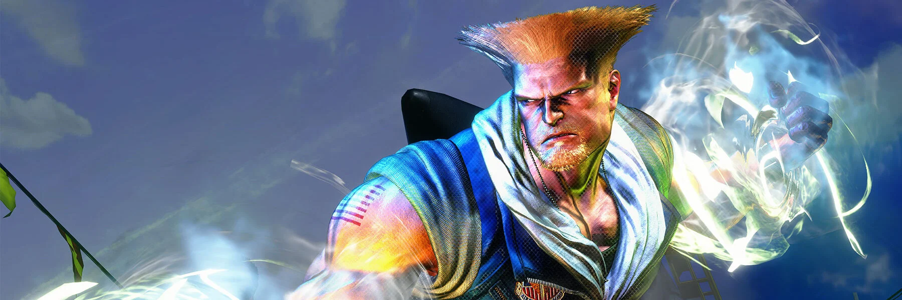

 

O "Evo Moment #37" é um dos momentos mais icônicos da história dos jogos de luta e ocorreu durante o torneio Evo 2004, na final de "Street Fighter III: 3rd Strike". Nesse momento, Daigo Umehara, jogando como Ken, enfrentou Justin Wong, que jogava como Chun-Li. No último round da última partida, Daigo estava com pouca saúde e Justin executou uma sequência de golpes que parecia imparável. No entanto, Daigo conseguiu realizar uma defesa perfeita (também conhecida como "parry") contra uma série de 15 golpes do super combo de Chun-Li, o "Super Art", seguido por um contra-ataque que levou à vitória. Esse momento é incrivelmente emocionante e é reverenciado como um dos mais impressionantes na história dos jogos de luta, demonstrando a habilidade e a precisão de Daigo Umehara, bem como a tensão e a emoção que os torneios de "Street Fighter" podem proporcionar. O "Evo Moment #37" tornou-se um símbolo da dedicação, habilidade e paixão dos jogadores de jogos de luta em todo o mundo.